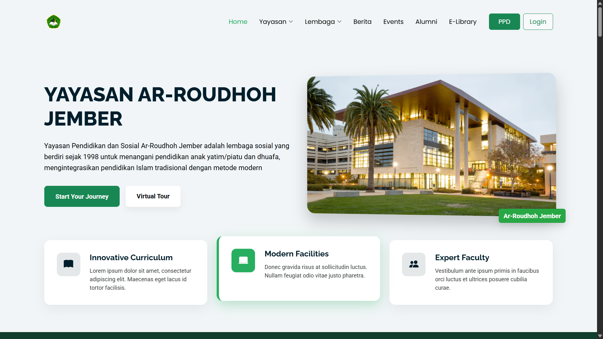

Ahmad Jafar Shodiq
Web & Mobile Developer
Laravel • Flutter • REST API • AI
Web & Mobile Developer
Laravel • Flutter • REST API • AISaya adalah Web & Mobile Developer yang berfokus pada pengembangan aplikasi modern menggunakan Laravel dan Flutter. Berpengalaman membangun REST API, sistem absensi berbasis Face Recognition, serta integrasi AI, Kamera, dan GPS.

Dashboard admin untuk sistem absensi berbasis Face Recognition yang dibangun menggunakan Laravel. Sistem ini memungkinkan admin mengelola data pengguna, memantau kehadiran secara real-time, serta melakukan validasi absensi berdasarkan wajah dan lokasi pengguna.

Sistem manajemen yayasan berbasis web yang dikembangkan menggunakan Laravel dan MySQL. Aplikasi ini mendukung pengelolaan data administrasi, konten, serta informasi internal yayasan melalui panel admin yang terstruktur dan mudah digunakan.

Website profil yayasan yang menampilkan informasi publik seperti program, kegiatan, dan berita. Terintegrasi dengan sistem backend admin sehingga konten dapat dikelola secara dinamis dan efisien.

Aplikasi mobile berbasis Flutter yang memanfaatkan kamera dan teknologi Artificial Intelligence untuk mendeteksi jenis nyamuk. Aplikasi ini bertujuan mengidentifikasi potensi penyakit yang dapat ditularkan, seperti DBD dan malaria, sebagai bentuk penerapan AI di bidang kesehatan.

Aplikasi mobile berbasis Flutter untuk sistem absensi dengan teknologi Face Recognition. Dilengkapi dengan validasi AI dan lokasi GPS guna memastikan kehadiran pengguna dilakukan secara akurat dan aman.

Sistem monitoring berbasis web untuk memantau aktivitas pengguna dan data sistem secara real-time. Dirancang untuk membantu pengawasan, analisis data, serta pengambilan keputusan yang lebih cepat dan efektif.

Aplikasi pengelolaan surat masuk dan surat keluar berbasis web yang mempermudah proses pencatatan, pencarian, serta arsip dokumen secara digital dengan sistem yang terorganisir.

Aplikasi desktop untuk manajemen apotek yang mendukung proses transaksi penjualan, pengelolaan stok obat, serta laporan operasional harian secara terkomputerisasi.